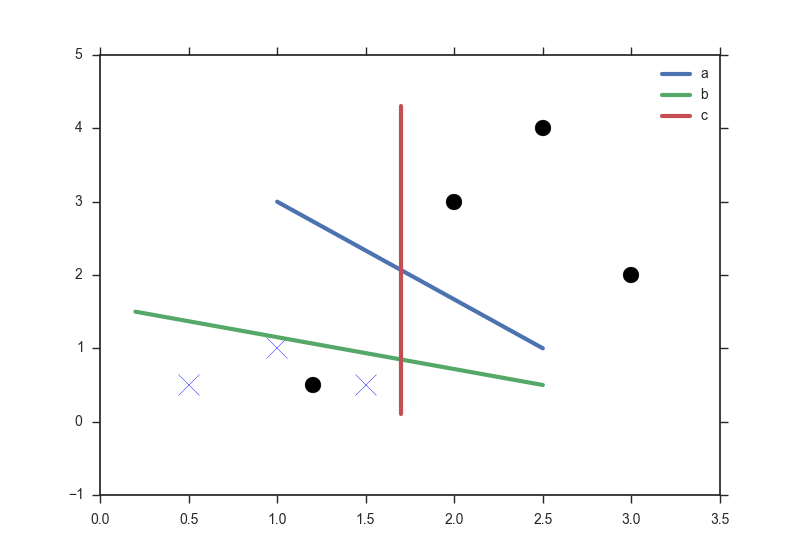

这是 SVM 系列的第二篇，上一篇文章介绍了 SVM 的主要思想以及推导过程，这一篇将会在此基础上介绍核函数(kernel)，这也是 SVM 最为重要的部分之一。
接着上一篇文章
大家好，我又回来更新了，非常抱歉这篇 SVM-2 在 SVM-1 后一个多月才填坑，因为期间我又去搞别的东西了，话不多说，让我们进入正题。
上面这幅图是不是很眼熟，在 SVM-1 中我几乎靠着这一张图说完了支持向量机的主要思想，不知道你们注意到没有，在推导 SVM 之前，我的措辞是很严谨的——「图中的两组数据，显然它们是线性可分（linear separable）的」，一切的推导都建立在线性可区分的基础上，然而实际的很多问题都并非如此，如果我在上面的图上再加一个点： 
无论是 \(a,b,c\) 都无法完美地把两种数据区分出来，实际上也不存在一条直线能完全区分出两种数据，这种情况就是不可线性区分的，核函数或许可以帮我们解决这个问题。
Kernel Trick
上一篇文章的最后我们通过乘数法得到了 \(\sum_{k=1}^m\alpha_iy^{(i)}=0, w =\sum_{k=1}^m\alpha_iy^{(i)}x^{(i)}\) ，现在我们把它们回带到 分界线 \(y=w^Tx+b\) :
\[ \begin{split} y&=\sum_{k=1}^m\alpha _iy^{(i)}x^{(i)}x+b\\ &=\sum_{k=1}^m\alpha _iy^{(i)}< x^{(i)},x >+b\\ \end{split} \]
如果我们已经求得 \(\alpha_i\) 和 \(b\)，那么 \(y\) 可以写成仅依赖于 \(x^{(i)}\) 和 \(x^{(j)}\) 的矢量积形式，这一点非常关键。很多时候我们需要从数据中挖掘新的特征来进行训练，而不是简单粗暴地用原始数据，比如我从 \(x\) 中挖掘出新的特征 \(x^2\)， 我们需要再一步一步重新推导 \(y\) 的表达式吗？只需要将 \(<x^{(i)}, x>\) 换成 \(<(x^{(i)})^2,x^2>\) 即可，更一般的：
如果存在一种映射关系 \(\phi(x)\)，将 \(x\) 映射到另一空间中，已知 \(y=\sum_{k=1}^m\alpha_iy^{(i)} < x^{(i)},x > +b\) ，那么新空间中的 \(y=\sum_{k=1}^m\alpha_iy^{(i)} < \phi(x^{(i)}),\phi(x) > +b\)。
整个过程非常的顺溜，\(\phi(x)\) 可以将数据从低维空间映射到高维空间中，为数据分类提供了新的视角，如下图所示，一维空间中的数据点 X 和 O 互相交杂，在一维空间中我们无法找到一个分界点进行划分，但是通过 \(\phi(x)=(x,0.5x^2+2)\) 映射到二维空间后，很容易找到分界线将这些不同类型的点区分开来。
映射函数 \(\phi\) 通常将低维的数据（m）映射到更高维的空间（n）中，使得线性区分变为了可能， 考虑到 \(m<<n\)，这引起的一个问题就是计算量随着维数的增加快速增大，但是我们又知道矢量点积的结果是一个数，怎么来简化这个操作呢？
在这里引入核函数（Kernel Function） \(K(x^{(i)},x^{(j)})=\phi(x^{(i)})\cdot \phi(x^{(j)})\) ，此时 ：
\[ y=\sum_{k=1}^m\alpha _iy^{(i)}K(x^{(i)},x)+b\\ \]
好像有点乱，让我们先来捋一捋：
\[ x^{(i)}\cdot x^{(j)}\longrightarrow \phi(x^{(i)})\cdot \phi(x^{(j)}) =K(x^{(i)},x^{(j)}) \]
映射函数 \(\phi\) 的作用是将低维空间的数据映射到高维空间中，核函数 \(K\) 表示的是映射之后高维空间中两个矢量的点积。
通过映射函数，我们能从原始数据中（低维空间）抽象出所需的特征（高维空间），由低维空间向高维空间的转化很多时候非常的麻烦，有意思的是，无论是1维、10维、100维还是更高维的空间，其矢量点积都是一个常数，那么有没有什么捷径，可以避免维度转换的过程，通过相对简单的计算直接得到矢量积？答案就是核函数，还是举一个例子来说明吧：
令 \(x=[x_1, x_2, x_3]^T,y=[y_1, y_2, y_3]^T\)，我们定义 \(\phi(x)=[x_1x_1,x_1x_2,x_1x_3,x_2x_1,x_2x_2,x_2x_3,x_3x_1,x_3x_2,x_3x_3]\) 将原始数据从三维空间映射到九维空间中，让我们来计算\(\phi(1,2,3) \cdot \phi(4,5,6)\)：
\[ \begin{split} \phi(1,2,3)&=[1,2,3,2,4,6,3,6,9]^T\\ \phi(4,5,6)&=[16,20,24,20,25,30,24,30,36]^T\\ \phi(1,2,3) \cdot \phi(4,5,6) &=1\times16+2\times 20 + 3\times 24 + 2\times 20 + 4 \times 25 + 6 \times 30 + 3 \times 24 + 6 \times 30 + 9\times 36=1024 \end{split} \]
可以看出计算还是相当繁琐的，现在让我们尝试找找对应的核函数：
\[ \begin{split} \phi(x)\cdot \phi(y)&=[x_1x_1,x_1x_2,x_1x_3,x_2x_1,x_2x_2,x_2x_3,x_3x_1,x_3x_2,x_3x_3]^T\cdot [y_1y_1,y_1y_2,y_1y_3,y_2y_1,y_2y_2,y_2y_3,y_3y_1,y_3y_2,y_3y_3] \\ &= x_1y_1x_1y_1+x_1y_1x_2y_2+x_1y_1x_3y_3+x_2y_2x_1y_1+x_2y_2x_2y_2+x_2y_2x_3y_3\\&+x_3y_3x_1y_1+x_3y_3x_2y_2+x_3y_3x_3y_3\\ &=(x_1y_1+x_2y_2+x_3y_3)^2\\ &=(x^Ty)^2\\ &=K(x,y) \end{split} \]
这一次我们直接用核函数计算：
\[ \begin{split} K(x,y)=K((1,2,3),(4,5,6))=(1\times 4 + 2\times 5 + 3\times 6)^2=(32)^2=1024 \end{split} \]
相比于从低维映射到高维空间再进行矢量积运算，核函数大大简化了计算的过程，使得向更高维转化变为了可能，我们不需要知道低维空间的数据是怎样映射到高维空间的，我们只需要知道结果是怎么计算出来的。
介绍两种核函数
在支持向量机中常用的几种核函数是多项式型核（Polynomial Kernel）、径向基函数核（ Radial Basis Function Kernel，又叫高斯核，简称 RBF）以及逻辑核（ Sigmoid Kernel）。
- 多项式型
\[ \begin{split} K(\mathbf{x},\mathbf{y})&=(\mathbf{x}^T\mathbf{y}+c)^d\\ \end{split} \]
如果 \(\mathbf{x},\mathbf{y}\) 本身是 \(k\) 维空间的向量，多项式展开后可知该核函数对应的空间维度为 \(\tbinom{k+d}{d}=\mathrm{C}^{k+d}_d=O(k^d)\) ，计算复杂度随着维数增加呈指数爆炸，但是用核函数进行计算的复杂度为 \(O(k)\) 。
维数越高，偏差（bias）越低，方差（variance）越高，容易出现过拟合的情况，相反维数越低，偏差就会越大，但是方差会随之减小，一般不宜选择过高的维度，最适合的维度需要通过交叉验证（cross validation）等方法来确定，关于方差和偏差的分析，可以看看这篇博文。
- RBF
\[ K(\mathbf {x} ,\mathbf {y} )=e^{-{\frac {||\mathbf {x} -\mathbf {y} ||^{2}}{2\sigma^2}}} \]
也可以写成这样的形式：
\[ K(\mathbf {x} ,\mathbf {y} )=e^{-\gamma||\mathbf {x} -\mathbf {y} ||^{2}} \]
高斯核是一个对应于无限空间的核函数，证明的方法非常简单，对 \(e^x\) 进行泰勒级数展开即可，为了书写上的方便，这里令 \(\sigma^2=1\)：
\[ \begin{split} K(\mathbf {x} ,\mathbf {y} )&=e^ {-{\frac {||\mathbf {x} -\mathbf {y} ||^{2}}{2}}}\\ &=e^ {-{\frac {||\mathbf {x} ||^{2}}{2}}}e^ {-{\frac {||\mathbf {y} ||^{2}}{2}}}e^ {\mathbf {x^Ty} }\\ &=e^ {-{\frac {||\mathbf {x} ||^{2}}{2}}}e^ {-{\frac {||\mathbf {y} ||^{2}}{2}}}\sum_{n=0}^\infty \frac{ (\mathbf {x^Ty})^n}{n!} \\ \end{split} \]
实际上我们无法给出映射到无限空间的函数 \(\phi\) ，更没有办法对两个无限维度的矢量进行点乘运算，但是我们却可以通过高斯核直接给出无限空间矢量积表达式，厉害了我的核！！！
高斯核的偏差和方差通过 \(\sigma^2\) 来控制，\(\sigma^2\) 越大偏差越大，方差越小，在下一部分相似度里进行解释好像更加直观。
相似度：核函数的另一种理解
核函数还可以理解为两个数据点的相似程度，两个向量的点乘其实就是将其中一个向量投影到另一个向量上，重叠的长度越大，相似度越大，向量点乘的结果也越大。以高斯核为例，\(K(\mathbf {x} ,\mathbf {y} )=e^{-{\frac {||\mathbf {x} -\mathbf {y} ||^{2}}{2\sigma^2}}}\) 衡量的是向量 \(\mathbf{x}\) 和 \(\mathbf{y}\) 在无限空间的相似度，当 \(\mathbf{x} =\mathbf{y}\) 时，\(K(\mathbf {x} ,\mathbf {y} )=1\)，表示两个向量完全重合，当\(||\mathbf{x} -\mathbf{y}||\to\infty\) 时， \(K(\mathbf {x} ,\mathbf {y} )=0\) ，两个向量之间的相似度很小；另一方面，当 \(\sigma^2\) 的值很小时，核函数的值越有可能趋向于0，向量 \(\mathbf{x}\) 和 \(\mathbf{y}\) 只有在相当接近的情况下才会被判别为相似，也就是说只有在 \(\mathbf{y}\) 邻域相当小的范围内才会被认为是相似于它的向量，这样严苛的条件确保了高精度（低偏差）但是却很容易过拟合（高方差）。
选择合适的核函数并不是一件容易的事情，因为评估数据点之间的相似度往往需要专业领域的知识，幸运的是大多数情况下高斯核都能取得不错的结果。核函数并不是支持向量机专用的技巧，任何算法只要能写成向量相乘的形式就可以运用核函数进行优化。
怎么构造核函数
一个正确的核函数对于数据相似度有着正确的描述，两个矢量越接近重合，相似度越大，越接近正交相似度越小，多项式型核和高斯核都是正确的核函数，那么对于核函数正确与否的一般标准是什么呢？让我们引入核矩阵。
定义一个\(m\times m\) 的矩阵 \(K\)：
\[ K_{ij}=K(x^{(i)},x^{(j)})=\phi(x^{(i)})\cdot \phi(x^{(j)}) \]
根据矢量点积的性质易得 \(K(i,j)=K(j,i)\)，显然这是一个对称矩阵，接下来我们证明它是一个半正定的对称矩阵，对于任意的向量 \(\mathbf{z}\)：
\[ \begin{split} z^TKz&=\sum_{i=1}^m\sum_{j=1}^mz_iK_{ij}z_j\\ &=\sum_{i=1}^m\sum_{j=1}^mz_i\phi(x^{(i)})^T\phi(x^{(j)})z_j\\ &=\left(\sum_{i=1}^m z_i\phi(x^{(i)})\right)^T\left(\sum_{j=1}^mz_j\phi(x^{(j)})\right)\\ &=\left(\sum_{i=1}^mz_i\phi(x^{(i)})\right)^2\\ &\geqslant0 \end{split} \]
我们证明了核函数的一个必要条件是对应的核矩阵为半正定对称矩阵，事实上这个条件是充分且必要的，也就是 Mercer’s theorem：
一个核函数 \(K: \mathbb{R}^n\times \mathbb{R}^n\to\mathbb{R}\) 成立的充要条件为，对于任意的 \([x^{(1)},x^{(2)},x^{(3)}\cdots x^{(m)}]\)，其对应的核矩阵为半正定对称矩阵。
关于 Mercer’s theorem 的证明超出了这篇文章的范畴，有兴趣的同学可以自己查找相关资料或者戳这里了解如何证明其充分性。
再说一点
原本想在这篇文章里写完 SVM 的核函数和正则化的，但是第一篇和第二篇之间间隔太长，很多东西都得重新看一遍，导致写核函数部分花了太长时间，暂时先搁置正则化留到第三篇再写？ 欢迎转载，注明出处就好~~